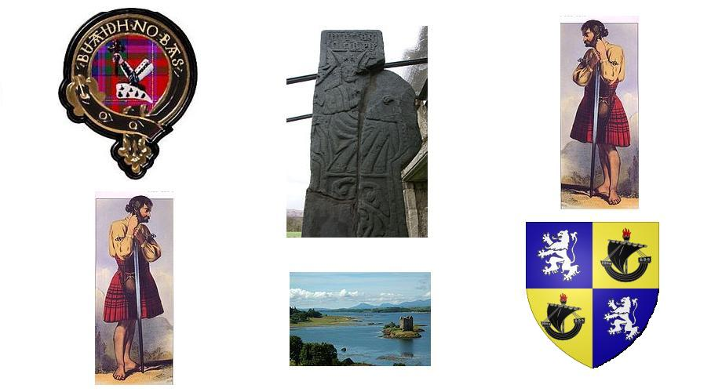

'Bhith gan Cuimhneachadh 's gan Ionndrain
Remembering and Missing them - Seul leur souvenir nous reste
Iain Ciar of Dunollie (1695-1737) & his brother, Captain Duncan McDougall
In the 1715 Jacobite Rising
Ascribed to Dùghall Bàn na Saobhain (Dugald White) [1]

Cape Breton * Argyllshire
Sequenced by Christian Souchon
Sources:
1. A Milling (=Waulking) Song from Cape Breton after a performance recorded by MacEdward Leach
2. As sung by Captain Dugald MacCormick,in 1953 at Kilmore and Kilbride in Argyllshire (Scotland). Recorded by Calum Iain Maclean for the "School of Scottish Studies".

|
WE REMEMBER AND WE MISS THEM...
(sung to the 2nd tune) [Chorus:] We remember and we miss them: Across the brine went the young men; We remember and we miss them. 1. Twas on Monday that all these fine Youths left their dear ones behind Remembering and missing them... 2. Gallant retinue of a king, Honour of the land you're leaving! 3. Captain Duncan McDougall leads them, [2] Of a splendid race young scion, 4. May you sire, as did your father, [3] Such a son when you're back over! [4] 5. In many danger, many hazard, Have the Gaels laurel wreaths gathered: 6. Their blows stretched the Galls on the floor Making them crouch on all fours! [5] 7. Now, young John Ciar of Dunollie, [6] Go to battlefield cheerfully! 8. With the help of Duncan's strong hand, You got oft o'er your foes command. 9. Oft was Honour only at stake: Now you fight for Justice's sake, 10. It's vigorous lads that draw nigh: Mighty robber-hunters, not shy! [7] 11. It has been long southward hauling, But you'll strike now, swift like lightning. 12. May white swords, guns on your shoulders Bring help to our beloved brothers. 13. On a Monday you all started, Here's a toast to those departed! [8] Translated: Christian Souchon (c) 2015 |
'S BHITH GAN CUIMHNEACHADH...
(sung to the 2nd tune) [Séisd:] Bhi 'gan cuimhneachadh 's 'gan ionndrainn, Na fir ùra dh'fhalbh thar sàile; Bhi 'gan cuimhneachadh 's 'gan ionndrainn. 1. 'S ann Di-Luain a dh'fhalbh na fleasgaich, 'S ghabh iad an cead de'n càirdean. Bhi 'gan cuimhneachadh 's 'gan ionndrainn... 2. 'S gum b'e siud a' chuideachd rìoghail, B'onoir iad dh'an tìr a dh'fhàg iad. 3. Caiptean Donnachadh, mac Mhic-Dhùghaill, Leis an dh'fhalbh na fiùrain àluinn. 4. Mas e mac thu fhéin mar d'athair, Dheanadh tu'n toirt dhachaidh sàbhailt'. 5. Anns gach gàbhadh agus cunnart, 'S mór an t-urram fhuair na Gàidheil. 6. Dh'fhàgadh iad na Goill gu h-ìosal, Cuid 'n an sìneadh air am màgan. 7. Ogh' Iain Chiar a bha'n Dùn-Ollaich, Rachadh togarrach 's na blàraibh. 8. 'S o'n 's e Donnachadh làmh bu chruaidhe, 'S tric a fhuair e buaidh air nàmhaid. 9. 'S tric a fhuair e buaidh le onoir, 'S ann tha'n cothrom aig an dràst' orr'. 10. Le chuid ghillean sgairteil, gleusda, Làidir, reubhairteach, neo-sgàthach. 11. Théid iad uile deas 'n an tarraing, Grad mar dhealanach fo làmh-san. 12. 'S geal an claidheamh 's an crios-guailne, Dh'éireadh buaidh le sluagh mo ghràidh-sa. 13. 'S ann Di-Luain a dh'fhalbh na gillean, 'S leam bu mhilis an deoch-slàinte. Source: www.smo.uhi.ac.uk/gaidhlig/alltandubh/orain/Bhi_Gan_Cuimhneachadh.html |
SEUL LE SOUVENIR NOUS RESTE...
(2ème mélodie) [Refrain:] Seul le souvenir nous reste De l'héroïque jeunesse, Partie par-delà les mers. 1. C'est un lundi qu'ils partirent, Leurs adieux aux leurs ils firent. Seul le souvenir nous reste... 2. Digne d'un roi, cette suite, L'honneur du pays qu'ils quittent, 3. Duncan McDougall la mène, Magnifique capitaine! 4. Puisses-tu, comme ton père, Perpétuer ta race fière! 5. C'est face aux pires menaces, Que les Gaëls se surpassent, 6. Saxons, souvent vous rampâtes, Devant eux à quatre pattes! 7. Jeune Jean de Dunollie, Que le succès te sourie! 8. Lorsque Duncan te seconde, L'ennemi bientôt succombe. 9. Ceux que le succès honore, Peuvent en avoir encore, 10. Comme lorsque votre force, Brisa le Voleur féroce. 11. Vers le sud un long voyage Précède un soudain orage: 12. Sabre au clair, ils abordèrent, Venant en aide à leurs frères! 13. C'est un lundi qu'ils partirent: Ce toast à ceux que j'admire! Traduction: Christian Souchon (c) 2015 |
|
[1] Text transcribed in the School of Scottish Studies. The contributor, Captain Dugald McCormick (1877-1960; Born and raised in Fionnphort, Mull. He was a sailor, master mariner and captain in the Australian army. He settled in Australia where he was a grazier of sheep. He composed verse in Gaelic and English, as well as tunes for pipes and songs) suggests that the song was composed by
Dùghall Bàn na Saobhain (Dugald White)
.
[2] John of Dunollie (Iain/Eòghann Ciar) joined the Jacobite Rising of 1715 with his younger brother, Captain Duncan McDougall , and led a contingent of approximately fifty clansmen at the Battle of Sherrifmuir, where he was wounded through the thigh by a musket ball. [3] Their father, Allan of Dunollie , 21st chief of McDougalls (from 1686 to 1695), supported the Jacobite rising in 1689. A small contingent of McDougalls was led by the Chief’s cousin, Sir Alexander McLean, on July 27, 1689 on the right flank at the Battle of Killiecrankie . Allan of Dunollie died in 1695. [4] In 1727 John of Dunollie was pardoned and allowed to return home. He had married, about 1712, Mary, the daughter of William MacDonald of Sleat. Mary had bravely defended Dunollie Castle during her husband's exile. Iain Ciar died in 1737. His second son, Allan , went to the East Indies. His third son, Duncan , joined the Rising of 1745. [5] During his eleven year exile in France, Ireland, and at times in hiding in Scotland, John of Dunollie participated in another Jacobite Rising, supported by Spain, and fought at the Battle of Glenshiel , in which the invading Jacobites and Spanish forces were defeated on June 10, 1719. Iain Ciar escaped back into exile. [6] John of Dunollie (Iain/Eòghann Ciar) - was the twenty-second chief of the clan and son of Allan of Dunollie 21st chief (from 1686 to 1695). [7] He was known for his swordsmanship and bravery, and his name is associated with many bold tales, such as the encounter in Ireland when he and his friend Livingstone encountered and killed a bandit known as the 'Red Robber' (which is mentioned in the song by the word "reubhairteach"=robber-hunter). [8] The present song found its way to Cape Breton where it became the hereafter "milling song" . Though the tune is different, stanzas 1 and 4 (mentioning Clan McDougall) are easily recognizable. Sources for these notes: www.tobarandualchais.co.uk/fullrecord/7374/1 macdougall.org/wp/our-heritage-2/chiefs/ (which also is the source for the above pictures: Castle Stalker, McDougall Cross at ArdChattan Priory, Crest of McDougall Clan, and arms of McDougall of McDougall). |
[1] Ce texte est la transcription, par la "School of Scottish Studies", d'un chant interprété par le capitaine Dugald McCormick (1877-1960). Celui-ci est né et a grandi à Fionnphort, île de Mull. Il fut tour à tour, matelot, quartier-maître et capitaine dans l'armée australienne, avant de s'établir en Australie où il devint éleveur de moutons. Il composa des vers en gaélique et en anglais, ainsi que des mélodies pour la cornemuse et des chants. Il est d'avis que le présent chant fut composé par
Dùghall Bàn na Saobhain (Dugald le Blanc)
.
[2] Jean de Dunollie (Iain/Eòghann Ciar) entra dans la rébellion Jacobite de 1715 avec son frère cadet, le capitaine Duncan McDougall , et était à la tête d'une cinquantaine d'hommes du clan McDougall à la bataille de Sherrifmuir, où il fut blessé à la cuisse par une balle de mousquet. [3] Leur père, Alain de Dunollie , 21ème chef des McDougall (de 1686 à 1695), fut un partisan Jacobite en 1689. Un petit contingent de McDougall sous le commandement du cousin du Chef, Sir Alexandre McLean, était engagé à l'aile droite, le 27 juillet 1689, à la bataille de Killiecrankie . Alain de Dunollie mourut en 1695. [4] En 1727, Jean de Dunollie fut amnistié et put rentrer en Ecosse. Il avait épousé, vers 1712, Mary, la fille de William McDonald de Sleat. Mary avait courageusement défendu la demeure seigneuriale de Dunollie pendant l'exil de son époux, Iain Ciar, qui mourut en 1737. Son second fils, Allan , émigra aux Antilles. Son troisième fils, Duncan , prit part au soulèvement de 1745. [5] Pendant son exil de onze ans en France, en Irlande, et sa clandestinité intermittente en Ecosse, Jean de Dunollie participa à un autre soulèvement Jacobite, soutenu par l'Espagne et combattit à Glenshiel , où les troupes Jacobites et espagnoles débarquées furent défaites le 10 juin 1719. Iain Ciar put s'échapper et retourna en exil. [6] Jean de Dunollie (Iain/Eòghann Ciar) - était le vingt-deuxième chef du clan McDougall et le fils d'Alain de Dunollie, 21ème chef (de 1686 à 1695). [7] Il était réputé pour être une fine lame et un homme courageux. Son nom est associé à de nombreux récits de bravoure, tels que la rencontre qu'il fit, lui et son ami Livingstone, d'un bandit qu'il tua et qui était connu sous le sobriquet de "Voleur rouge" (notre chant y fait allusion par le mot "reubhairteach"=chasse-voleur). [8] Le présent chant s'est trouvé transporté à Cap Breton où il devint le "milling song" ci-après. Bien que la mélodie soit différente, les strophes 1 et 4 (celle qui parle du Clan McDougall) sont facilement reconnaissables. Sources de ces notes: www.tobarandualchais.co.uk/fullrecord/7374/1 macdougall.org/wp/our-heritage-2/chiefs/ (d'où proviennent aussi les illustrations: le Château Stalker, la Croix McDougall au Prieuré d'ArdChattan, l'insigne du clan McDougall et les armes du chef McDougall de McDougall). |
|
CAPE BRETON VERSION
(sung to the 1st tune) Remembering them and missing them The young men who went overseas Remembering them and missing them 1. (1) It was on Monday they moved away In my foolish thoughts l think of them 2. It was on Tuesday I bad them farewell In the glen at the house of the son of MacMartin. 3. Remembering all of them Oh we cannot number them 4. (3) ...Above MacDougall When the handsome youths went off 5. Remembering them unwisely Since we cannot number them Remembering them and missing them The young men who went overseas Remembering them and missing them |
CAPE BRETON VERSION
(sung to the 1st tune) Bhi 'gan cuimhneachadh 's gan ionndrainn Na fir ùr a dh'fhalbh thar sàile; Bhi 'gan cuimhneachadh 's gan ionndrainn. 1. (1) 'S ann Di-luain a rinn sinn gluasad 'S binn a fhuair iad baoch air m' àirde 2. 'S ann Dimàirt ghabh mi mo chead leibh Suas na glinn tigh Mhic 'ic Màrtuinn 3. Bhi gan cuimhneachadh uile O chan urrainn sinn gan àireamh 4. (3) ...os cinn Mhic Dhùghaill Leis na dh'fhalbh na fiurain aluinn 5. Bhi gan cuimhneachadh gun eagnadh Bhon nach urrainn sinn gan àireamh 'S bhi gan cuimhneachadh 's gan ionndrain Na fir ùr a dh'fhalbh air sàile Bhi gan cuimhneachadh 's gan ionndrain |
VERSION DU CAP BRETON
(se chante sur la 1ère mélodie) Rappelez-vous comme ils nous manquent Tous ces jeunes partis au loin Rappelez-vous comme ils nous manquent 1. (1) C'est un lundi qu'ils sont partis Et je pense toujours à eux 2. Le mardi je leurs dis adieu Dans le val du fils McMartin. 3. Rappelez-vous comme ils nous manquent Qui sait donc quel était leur nombre... 4. (3) ...Il y avait des McDougall Quand ces beaux jeunes gens partirent 5. Mais notre souvenir s'égare Nous ne pouvons les dénombrer Rappelez-vous comme ils nous manquent Tous ces jeunes partis au loin Rappelez-vous comme ils nous manquent |
Listen to original record